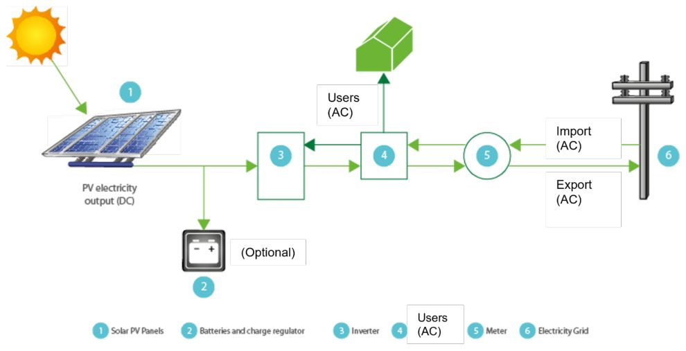
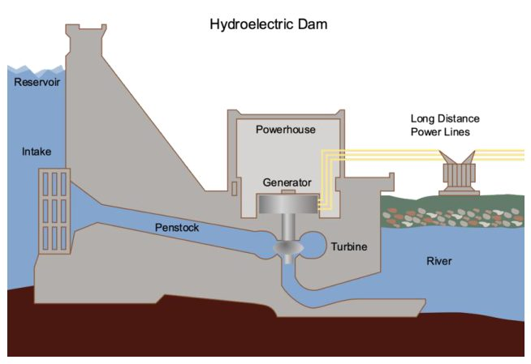
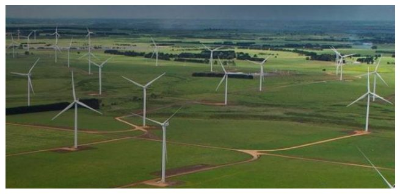
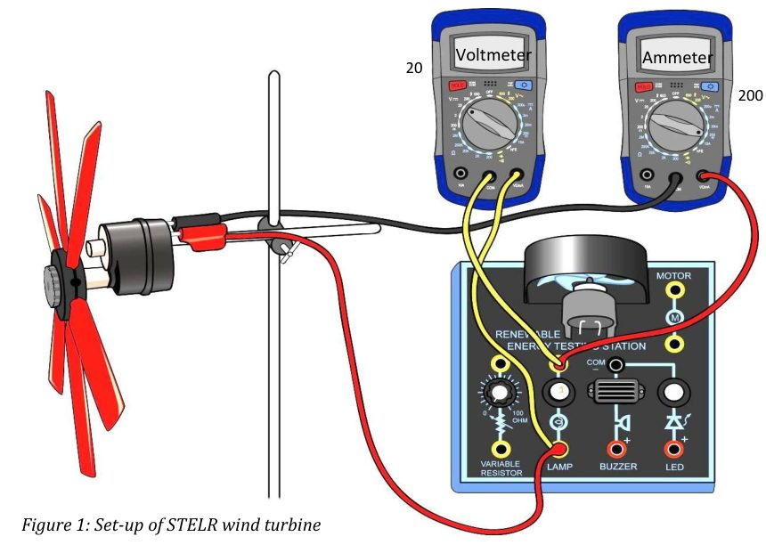
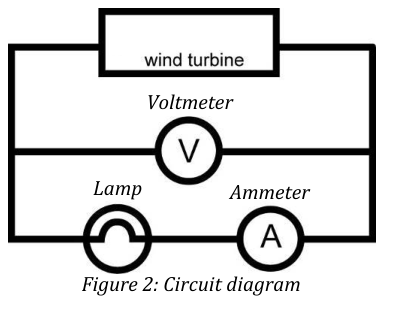
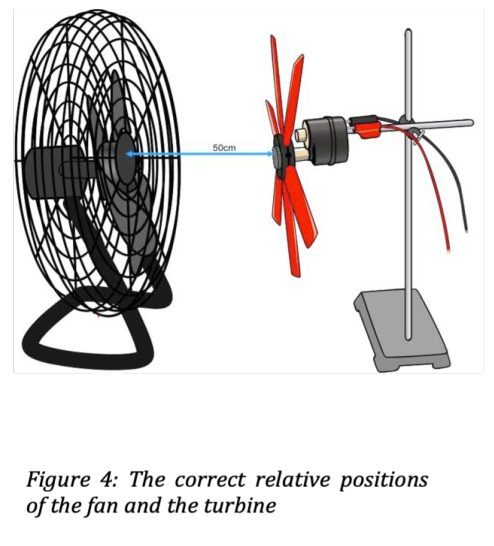
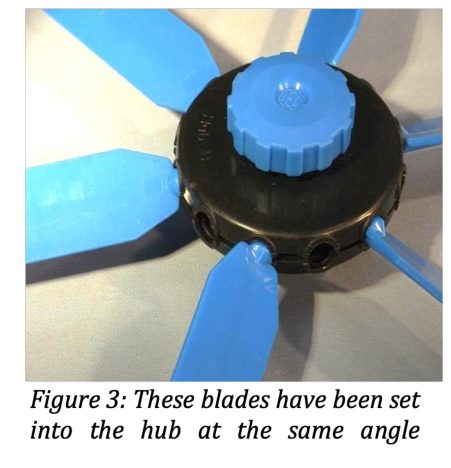

1.3 Humans can impact climate change
There are a number of key actions we can take to reduce the effects of human-induced climate change.
List actions that people can take to reduce the effects of climate change.
Reduce: switch to less polluting transport (walk, ride or use public transport more often); eat locally produced food to cut transport emissions; switch to more efficient appliances (e.g. LED lights); switch to renewable energy instead of fossil fuels.
Re-use: avoid single-use items that take a lot of energy to produce; avoid sending things to landfill.
Recycle: redirect glass, plastic and paper from landfill so they can be recycled.
Restore: plant more trees to reverse the effects of deforestation.
Identifying renewable energy resources
Renewable energy resources are preferred to fossil fuels because they lead to lower overall carbon dioxide emissions. A renewable energy resource must:
| Criteria | Details |
|---|---|
| Be replenished by natural processes in a relatively short time | e.g. solar energy returns every day, compared with the millions of years needed to form fossil fuels |
| Not negatively impact future generations | e.g. avoiding plant-based fuels that lead to food shortages |
Solar energy
Solar power is generated when light shines on a solar cell, creating a current and voltage through a physical effect called the photoelectric effect.
Energy transformation: light energy → electrical energy

| Characteristic | Details |
|---|---|
| Key advantages | Ideal for Australia, where solar irradiance is very high. No moving parts, so low maintenance costs. Versatile, from small to large scale. PV cells produce DC electricity, which an inverter converts to AC for use or export. Strong uptake in homes (rooftop solar). |
| Disadvantages | Not suitable for overnight use unless batteries are used. The angle of the panels and minimal shading are crucial for efficient operation. |
| Interesting? | CGS has the largest solar array of any school in Australia. |
Hydroelectric power
Hydroelectric power uses a new or existing dam. Water flows down through a penstock, spinning a turbine and generating electricity. Hydroelectric dams are very efficient, but they are a large-scale investment that drastically alters the environment.
Energy transformation: gravitational potential energy → kinetic energy → electrical energy

| Characteristic | Details |
|---|---|
| Key advantages | Very efficient. Works very well in regions such as Tasmania: relatively low population, hilly terrain and high rainfall. |
| Disadvantages | A large-scale, long-term investment, best suited to large-scale rather than small-scale use. Alters river flow and can displace communities from flooded valleys. |
Water flows down through a , spinning a and generating electricity.
Wind energy
Wind power is produced when the blades of a turbine spin, driving a generator mounted at the top of the tower.
Energy transformation: kinetic energy (wind) → kinetic energy (blades) → electrical energy
Australia has excellent wind resources by world standards. The southern coastline gets strong winds from the Southern Ocean, and many sites have average wind speeds above 8 m/s at turbine height. Wind provided 10% of Australia's total electricity generation in 2021 and more than one-third of its renewable energy (Department of Climate Change, Energy, the Environment and Water, 2022).

| Characteristic | Details |
|---|---|
| Key advantages | Ideal for Australia, particularly coastal and remote areas. Established technology with high power production. Good for large-scale use. |
| Disadvantages | Some opposition because of appearance. Bird populations need to be considered. More maintenance needed than solar. Inconsistent production because the wind varies. Less suitable for small-scale home use. |
Case study: wind turbine investigation
Wind is one of the most practical sources of renewable energy. It is readily available, especially in coastal areas of Australia, and can deliver large amounts of electricity directly to communities. In this practical you investigate some key factors that affect a model wind turbine's power output.
Key questions:
- What is the relationship between the angle of the blades and the electrical power delivered?
- What blade area delivers the most power?
- How many blades deliver the most power?
Part A: set-up and sample results


The leads from the turbine go to the lamp, then to the ammeter, and back to the turbine, forming a loop (circuit). Because they are all on the same current path, they are connected in series. The voltmeter is connected across the lamp on a separate small loop, so it is in parallel with the lamp.
Because the ammeter reads in milliamps, power can be calculated directly in milliwatts:
A model wind turbine produces a voltage of 2.10 V and a current of 31.5 mA. What power does it deliver, in milliwatts?
P = V × I = 2.10 × 31.5 = 66.2 mW.
Procedure (summary): wear goggles. Fit 3 blades at 45° to the hub (the notches in the hub are 22.5° apart). Mount the turbine on the ungeared (bottom) shaft. Place the fan 50 cm from the hub, with the two hubs at the same height, and don't change this distance. Set the ammeter to 200 mA and the voltmeter to 20 V. With permission, turn the fan to its highest setting and record the steady current and voltage.


Part B: the three independent variables
For each experiment the DV is the power (mW). Once you find the best value of one IV, it becomes a controlled variable for the next experiment.
Choose the independent variable for each experiment.
| Experiment | IV | DV |
|---|---|---|
| 1 | Power (mW) | |
| 2 | Power (mW) | |
| 3 | Power (mW) |
List four variables that must be controlled in experiment 1 (blade angle).
Distance from the fan to the turbine (cm); number of blades; area of the blades (cm2); air speed from the fan (fan setting). (Also: height and alignment of the fan and turbine hubs, and the same circuit and meters.)
- Experiment 1: test 6 blade angles between 0° (flat against the wind) and 90° (square to the wind), using the 22.5° notches, with three red blades.
- Experiment 2: using the best angle, test blade areas: yellow (15 cm2), blue (20 cm2) and red (30 cm2).
- Experiment 3: using the best angle and area, test 2 to 12 blades.
Part C: the wind turbine report
Submit a group report on the most effective design of the STELR wind turbine, using the shared wind investigation template.
- Questioning and predicting and planning and conducting are provided.
- Processing and analysing: present your data in tables and draw appropriate graphs, with power as the dependent variable each time. (If you couldn't get results, use the sample results file: http://bit.ly/STELRWindTurbineData.)
- Evaluating: how clear were the results? How could your method be improved to avoid errors and get more consistent results? Acknowledge flaws in your method where they exist, and always try to answer "Why has this occurred?"
Which type of graph should you draw for each of the three experiments? Explain.
Blade angle and number of blades are numerical (angle is continuous; number of blades is discrete), so plot scatter graphs of power against each one (a trendline can be added for angle). Blade area was tested as three coloured blades (categories), so a column graph suits it, although the areas could also be plotted as numbers (15, 20 and 30 cm2) on a scatter graph.